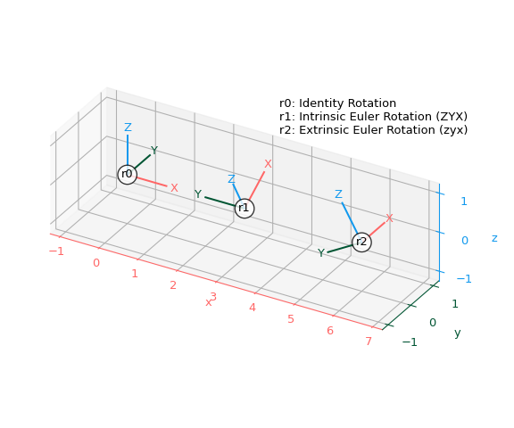

Rotation#
- class scipy.spatial.transform.Rotation#
Rotation in 3 dimensions.
This class provides an interface to initialize from and represent rotations with:
Quaternions
Rotation Matrices
Rotation Vectors
Modified Rodrigues Parameters
Euler Angles
The following operations on rotations are supported:
Application on vectors
Rotation Composition
Rotation Inversion
Rotation Indexing
Indexing within a rotation is supported since multiple rotation transforms can be stored within a single
Rotationinstance.To create
Rotationobjects usefrom_...methods (see examples below).Rotation(...)is not supposed to be instantiated directly.- Attributes:
singleWhether this instance represents a single rotation.
Methods
Number of rotations contained in this object.
from_quat(cls, quat, *[, scalar_first])Initialize from quaternions.
from_matrix(cls, matrix)Initialize from rotation matrix.
from_rotvec(cls, rotvec[, degrees])Initialize from rotation vectors.
from_mrp(cls, mrp)Initialize from Modified Rodrigues Parameters (MRPs).
from_euler(cls, seq, angles[, degrees])Initialize from Euler angles.
from_davenport(cls, axes, order, angles[, ...])Initialize from Davenport angles.
as_quat(self[, canonical, scalar_first])Represent as quaternions.
as_matrix(self)Represent as rotation matrix.
as_rotvec(self[, degrees])Represent as rotation vectors.
as_mrp(self)Represent as Modified Rodrigues Parameters (MRPs).
as_euler(self, seq[, degrees])Represent as Euler angles.
as_davenport(self, axes, order[, degrees])Represent as Davenport angles.
concatenate(cls, rotations)Concatenate a sequence of
Rotationobjects into a single object.apply(self, vectors[, inverse])Apply this rotation to a set of vectors.
Compose this rotation with the other.
Compose this rotation with itself n times.
inv(self)Invert this rotation.
magnitude(self)Get the magnitude(s) of the rotation(s).
approx_equal(self, Rotation other[, atol, ...])Determine if another rotation is approximately equal to this one.
mean(self[, weights])Get the mean of the rotations.
reduce(self[, left, right, return_indices])Reduce this rotation with the provided rotation groups.
create_group(cls, group[, axis])Create a 3D rotation group.
Extract rotation(s) at given index(es) from object.
identity(cls[, num])Get identity rotation(s).
random(cls[, num, random_state])Generate uniformly distributed rotations.
align_vectors(cls, a, b[, weights, ...])Estimate a rotation to optimally align two sets of vectors.
See also
Notes
Added in version 1.2.0.
Examples
>>> from scipy.spatial.transform import Rotation as R >>> import numpy as np
A
Rotationinstance can be initialized in any of the above formats and converted to any of the others. The underlying object is independent of the representation used for initialization.Consider a counter-clockwise rotation of 90 degrees about the z-axis. This corresponds to the following quaternion (in scalar-last format):
>>> r = R.from_quat([0, 0, np.sin(np.pi/4), np.cos(np.pi/4)])
The rotation can be expressed in any of the other formats:
>>> r.as_matrix() array([[ 2.22044605e-16, -1.00000000e+00, 0.00000000e+00], [ 1.00000000e+00, 2.22044605e-16, 0.00000000e+00], [ 0.00000000e+00, 0.00000000e+00, 1.00000000e+00]]) >>> r.as_rotvec() array([0. , 0. , 1.57079633]) >>> r.as_euler('zyx', degrees=True) array([90., 0., 0.])
The same rotation can be initialized using a rotation matrix:
>>> r = R.from_matrix([[0, -1, 0], ... [1, 0, 0], ... [0, 0, 1]])
Representation in other formats:
>>> r.as_quat() array([0. , 0. , 0.70710678, 0.70710678]) >>> r.as_rotvec() array([0. , 0. , 1.57079633]) >>> r.as_euler('zyx', degrees=True) array([90., 0., 0.])
The rotation vector corresponding to this rotation is given by:
>>> r = R.from_rotvec(np.pi/2 * np.array([0, 0, 1]))
Representation in other formats:
>>> r.as_quat() array([0. , 0. , 0.70710678, 0.70710678]) >>> r.as_matrix() array([[ 2.22044605e-16, -1.00000000e+00, 0.00000000e+00], [ 1.00000000e+00, 2.22044605e-16, 0.00000000e+00], [ 0.00000000e+00, 0.00000000e+00, 1.00000000e+00]]) >>> r.as_euler('zyx', degrees=True) array([90., 0., 0.])
The
from_eulermethod is quite flexible in the range of input formats it supports. Here we initialize a single rotation about a single axis:>>> r = R.from_euler('z', 90, degrees=True)
Again, the object is representation independent and can be converted to any other format:
>>> r.as_quat() array([0. , 0. , 0.70710678, 0.70710678]) >>> r.as_matrix() array([[ 2.22044605e-16, -1.00000000e+00, 0.00000000e+00], [ 1.00000000e+00, 2.22044605e-16, 0.00000000e+00], [ 0.00000000e+00, 0.00000000e+00, 1.00000000e+00]]) >>> r.as_rotvec() array([0. , 0. , 1.57079633])
It is also possible to initialize multiple rotations in a single instance using any of the
from_...functions. Here we initialize a stack of 3 rotations using thefrom_eulermethod:>>> r = R.from_euler('zyx', [ ... [90, 0, 0], ... [0, 45, 0], ... [45, 60, 30]], degrees=True)
The other representations also now return a stack of 3 rotations. For example:
>>> r.as_quat() array([[0. , 0. , 0.70710678, 0.70710678], [0. , 0.38268343, 0. , 0.92387953], [0.39190384, 0.36042341, 0.43967974, 0.72331741]])
Applying the above rotations onto a vector:
>>> v = [1, 2, 3] >>> r.apply(v) array([[-2. , 1. , 3. ], [ 2.82842712, 2. , 1.41421356], [ 2.24452282, 0.78093109, 2.89002836]])
A
Rotationinstance can be indexed and sliced as if it were a single 1D array or list:>>> r.as_quat() array([[0. , 0. , 0.70710678, 0.70710678], [0. , 0.38268343, 0. , 0.92387953], [0.39190384, 0.36042341, 0.43967974, 0.72331741]]) >>> p = r[0] >>> p.as_matrix() array([[ 2.22044605e-16, -1.00000000e+00, 0.00000000e+00], [ 1.00000000e+00, 2.22044605e-16, 0.00000000e+00], [ 0.00000000e+00, 0.00000000e+00, 1.00000000e+00]]) >>> q = r[1:3] >>> q.as_quat() array([[0. , 0.38268343, 0. , 0.92387953], [0.39190384, 0.36042341, 0.43967974, 0.72331741]])
In fact it can be converted to numpy.array:
>>> r_array = np.asarray(r) >>> r_array.shape (3,) >>> r_array[0].as_matrix() array([[ 2.22044605e-16, -1.00000000e+00, 0.00000000e+00], [ 1.00000000e+00, 2.22044605e-16, 0.00000000e+00], [ 0.00000000e+00, 0.00000000e+00, 1.00000000e+00]])
Multiple rotations can be composed using the
*operator:>>> r1 = R.from_euler('z', 90, degrees=True) >>> r2 = R.from_rotvec([np.pi/4, 0, 0]) >>> v = [1, 2, 3] >>> r2.apply(r1.apply(v)) array([-2. , -1.41421356, 2.82842712]) >>> r3 = r2 * r1 # Note the order >>> r3.apply(v) array([-2. , -1.41421356, 2.82842712])
A rotation can be composed with itself using the
**operator:>>> p = R.from_rotvec([1, 0, 0]) >>> q = p ** 2 >>> q.as_rotvec() array([2., 0., 0.])
Finally, it is also possible to invert rotations:
>>> r1 = R.from_euler('z', [90, 45], degrees=True) >>> r2 = r1.inv() >>> r2.as_euler('zyx', degrees=True) array([[-90., 0., 0.], [-45., 0., 0.]])
The following function can be used to plot rotations with Matplotlib by showing how they transform the standard x, y, z coordinate axes:
>>> import matplotlib.pyplot as plt
>>> def plot_rotated_axes(ax, r, name=None, offset=(0, 0, 0), scale=1): ... colors = ("#FF6666", "#005533", "#1199EE") # Colorblind-safe RGB ... loc = np.array([offset, offset]) ... for i, (axis, c) in enumerate(zip((ax.xaxis, ax.yaxis, ax.zaxis), ... colors)): ... axlabel = axis.axis_name ... axis.set_label_text(axlabel) ... axis.label.set_color(c) ... axis.line.set_color(c) ... axis.set_tick_params(colors=c) ... line = np.zeros((2, 3)) ... line[1, i] = scale ... line_rot = r.apply(line) ... line_plot = line_rot + loc ... ax.plot(line_plot[:, 0], line_plot[:, 1], line_plot[:, 2], c) ... text_loc = line[1]*1.2 ... text_loc_rot = r.apply(text_loc) ... text_plot = text_loc_rot + loc[0] ... ax.text(*text_plot, axlabel.upper(), color=c, ... va="center", ha="center") ... ax.text(*offset, name, color="k", va="center", ha="center", ... bbox={"fc": "w", "alpha": 0.8, "boxstyle": "circle"})
Create three rotations - the identity and two Euler rotations using intrinsic and extrinsic conventions:
>>> r0 = R.identity() >>> r1 = R.from_euler("ZYX", [90, -30, 0], degrees=True) # intrinsic >>> r2 = R.from_euler("zyx", [90, -30, 0], degrees=True) # extrinsic
Add all three rotations to a single plot:
>>> ax = plt.figure().add_subplot(projection="3d", proj_type="ortho") >>> plot_rotated_axes(ax, r0, name="r0", offset=(0, 0, 0)) >>> plot_rotated_axes(ax, r1, name="r1", offset=(3, 0, 0)) >>> plot_rotated_axes(ax, r2, name="r2", offset=(6, 0, 0)) >>> _ = ax.annotate( ... "r0: Identity Rotation\n" ... "r1: Intrinsic Euler Rotation (ZYX)\n" ... "r2: Extrinsic Euler Rotation (zyx)", ... xy=(0.6, 0.7), xycoords="axes fraction", ha="left" ... ) >>> ax.set(xlim=(-1.25, 7.25), ylim=(-1.25, 1.25), zlim=(-1.25, 1.25)) >>> ax.set(xticks=range(-1, 8), yticks=[-1, 0, 1], zticks=[-1, 0, 1]) >>> ax.set_aspect("equal", adjustable="box") >>> ax.figure.set_size_inches(6, 5) >>> plt.tight_layout()
Show the plot:
>>> plt.show()
 These examples serve as an overview into the
Rotationclass and highlight major functionalities. For more thorough examples of the range of input and output formats supported, consult the individual method’s examples.